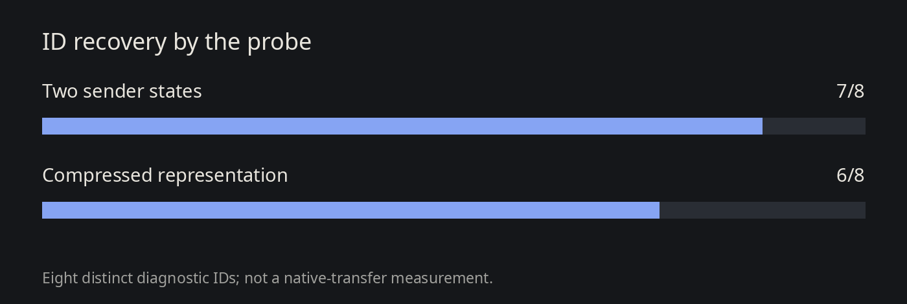
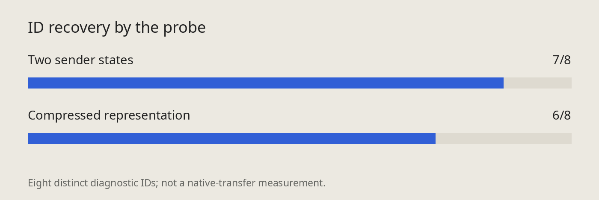
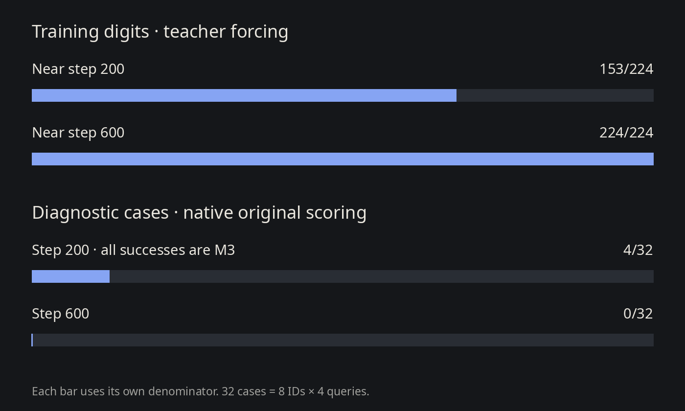
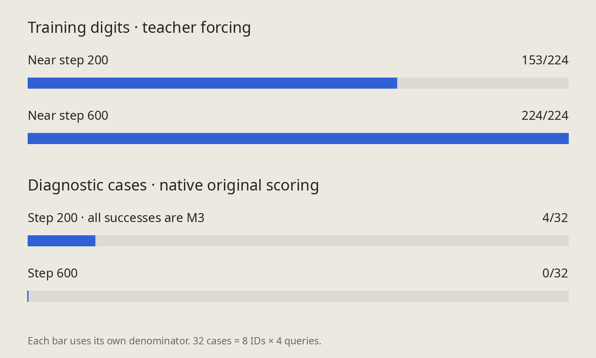

Picture a source entry labeled M3. The task is to pass information about that entry to a second model and have it return the right letter–digit ID. The second model stays frozen; we train the interface feeding it.
A probe recovered most IDs absent from its training set. The frozen receiver got just one identity right: M3. More training improved the training fit and erased that remaining transfer.
Completed results on a small letter–digit task. This is not an Arabic-language evaluation or evidence of robust transfer. The eight diagnostic IDs had prior evaluation and design exposure, so they are not a pristine test set.
Ember's capture, intervention, and bundle workflow supports inspecting and replaying tests of feature use.
Probe: a separate predictor trained to read an ID from saved model features.
Receiver: the frozen model we ask to produce the ID. A learned reader feeds source features into it.
Transfer: the receiver answers correctly for a whole ID combination absent from the positive training set.
We train on familiar IDs and check whole letter–digit combinations left out of that training set.
Training contains 56 IDs with four queries each: 224 rows. The diagnostic bank has eight IDs and four queries each: 32 cases per condition. Those are eight distinct identities, not 32 independent identities.
The sender supplies hidden-state features through a compressed, 64-dimensional representation. The selected-ID memories are development fixtures; full-table binding and fresh source capture remain untested.
Reading an ID with a probe, reaching it with supervised oracle fitting, and transferring it through the receiver are separate tests. Each needs its own evidence.
The fixed ridge probe generalized to most diagnostic identities.
It recovered 7/8 from the two sender states and 6/8 from the compressed representation. Both fits used only the 56 training IDs, without diagnostic labels or oracle-code targets.


Leaving one whole training ID out at a time gave 56/56 for sender states and 44/56 after compression. Shifting the training labels as a null control gave diagnostic scores of 1/8 and 0/8, respectively.
Independent NumPy and Torch implementations agreed within the registered tolerances and produced identical primary predictions.
A0 was read correctly before compression and missed afterward. A2 was already wrong in the sender-state probe. This locates errors for this decoder; it does not establish that compression erased identity information.
The trained interface made the frozen receiver answer correctly for M3. The other seven diagnostic identities failed.
That is 4/32 cases in each of the original, donor-following, and changed-binding conditions. All four successful queries belonged to M3.
Familiar controls passed: 32/32 original cases, 32/32 donor-following cases, and 31/32 changed-binding cases.
Training changed only reader.value.weight for 200 fixed Adam steps on the 224 training rows. The sender, receiver, routing, other bridge entries, and parameter count stayed fixed. There was no inference codebook or diagnostic-ID lookup.
Joint and candidate-constrained sequential scoring agreed. Sequential scoring chooses among 16 prefixes and eight digits; this is not unrestricted generation. The preregistered count and paired gates failed.
Probe recovery of 6/8 and receiver success on one ID measure different operations. Their gap leaves the failing mechanism unresolved.
Continuing the same training removed the receiver’s only diagnostic success.
The continuation replayed the step-200 parameters and Adam state exactly, then ran 400 more updates. Diagnostic scores fell from 4/4/4 to 0/0/0 across the three conditions. Familiar scores stayed at 32/32/31.


Recorded pre-update training loss fell from 0.5465 to 0.0954. With teacher forcing, digit accuracy rose from 153/224 to 224/224. Letter accuracy was already 224/224.
These training measurements are taken near the endpoints. They neither measure native transfer nor establish mathematical convergence.
Receiver margins fell for six of the eight diagnostic IDs. M3’s small positive margin turned negative. Along this trajectory, exact training classification came with worse transfer.
Choosing another checkpoint from these diagnostic scores would use test results for selection. Step choice needs training-ID-only validation. The separate four-fold work had no aggregate result at this note’s cutoff.
The replay and interface checks passed, supporting the interpretation of poor transfer under this mapping.
The starting checkpoint, historical scores, and repeated arms replayed exactly. Native/render parity, direct scoring, routing, and the saved reader-state contract passed. Independent score and weight reconstruction checks also passed.
The frozen receiver hash stayed unchanged and its state was restored. These checks establish the tested mechanics; the eight exposed diagnostic IDs still cannot represent language understanding broadly.
The morphology notes ask whether a probe generalizes beyond familiar words. This task adds a separate receiver test: six readable compressed IDs yielded one transferred ID.
The practical consequence is to report probe recovery and model behavior separately. A claim about the model using a feature needs a behavioral intervention. This toy task provides no new Arabic-language result.